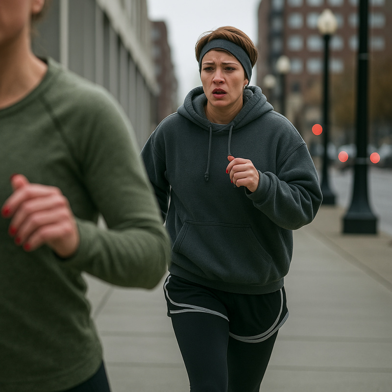

The war room Casey had assembled in her living room looked like evidence from a conspiracy trial. Legal pads covered in her precise handwriting mapped out scenarios and counter-scenarios. My phone, liberated from my hand and placed face-down on the coffee table, occasionally buzzed with calls I wasn't allowed to answer. Outside, Sunday's gray sky pressed against the windows like the world itself was trying to suffocate us.
"Stop pacing," Casey commanded from her position on the couch, surrounded by her paper fortifications. "You're making me dizzy."
I couldn't stop moving. Movement was the only thing keeping me from complete psychological collapse. Just hours ago I'd been pulling perch through ice holes, feeling like myself again. Now every media outlet in the state was running photos of Yvonne Cross, a woman I'd invented who was suddenly, horrifyingly real.
"How did Tommy even get those photos?" I asked for the third time, knowing the answer didn't matter but needing to talk about something concrete.
"Someone in the office probably tipped him off. Or he hired a PI to follow you. Does it matter?" Casey's voice carried that particular tone of forced patience she used when managing crisis communications. Except this time, I was the crisis. "The story's out. Every major outlet has picked it up. The question is what we do now."
My phone buzzed again. Another reporter, probably, or maybe my father had finally seen the news. That thought made my stomach clench harder than the corset had.
"We tell the truth," I said, stopping mid-pace. "I explain it was a response to Beau's harassment. That I was making a point about-"
"About what? Admit the governor was having an affair? Or that you think being transgender is a costume you can wear to win arguments?" Casey's voice cut through my desperation with surgical precision. "That's the headline you want? 'Chief of Staff Admits to Mocking Trans Identity for Political Points'?"
She was right. Of course she was right. Casey was always right, which was why I'd hired her and why I trusted her and why I was sitting in her apartment trying to figure out how to survive this.
"Then what?" I sank into the chair across from her, keeping my knees together even in my jeans. The muscle memory from five days of feminine performance persisted. "I can't stay Yvonne."
"Why not?"
The question hung between us like the moment between jumping and landing.
"Casey, I'm not trans. This isn't who I am. It's a-" I gestured helplessly at myself, "-a tactical maneuver that spiraled out of control."
"I know that. You know that. But does anyone else need to know that?" She leaned forward, and I recognized her campaign mode. "Listen, you have two choices. Option one: admit this was all theater, apologize profusely, and when that doesn't work, watch your career implode in real-time. Option two: lean into it."
"Lean into it?"
"The media's already running with the brave transition narrative. Trans advocacy groups are praising your courage. Everyone will have to publicly support you or look bigoted." She pulled out her phone, scrolling through notifications. "Look, the LGBTQ Political Alliance just tweeted about the importance of visible trans leadership."
I stared at the screen, watching my fabricated identity crystallize into political reality in real-time.
"But I can't just... be Yvonne forever."
"Not forever," Casey said, and something in her tone made me look up. "Just through the election."
"The election? That's ten months away!"
"I know it seems like a long time-"
"Seems like?" I stood again, anger flaring. "Casey, you're asking me to pretend to be a woman for the better part of a year. To lie to everyone, to-"
"I'm trying to save your career." Her voice stayed level, but I caught steel underneath. "Right now, today, your choices are: be Yvonne through November and maintain your political future, or throw it all away for the satisfaction of telling the truth."
My phone buzzed again. This time Casey picked it up, glancing at the screen.
"It's Beau," she said.
"Let it ring."
"He's already called six times. You can't avoid him forever." She held out the phone and hit "Answer."
I took the phone like it might explode. "Governor?"
"Finally." Beau's voice carried a mixture of anger and something else-panic, maybe. "What the hell is happening? I'm getting calls from every reporter in the state asking for comment on your transition."
"I-"
"Is this your play? Force my hand by going public?" His words came fast, agitated. "Because if you think you can embarrass me into-"
"I didn't leak anything," I interrupted. "This was Tommy. Revenge for being fired."
Silence on the other end. Then: "Shit."
"Yeah."
"Well, you can't back out now," he said, and I heard resignation creeping into his voice. "Derek already gave a statement supporting your journey. If you reverse course, it makes the whole administration look like we pressured you."
Of course Derek had given a statement. He'd been thrust into the press secretary role without warning, probably panicked when reporters started calling. Supporting his boss's "transition" was the safest political move.
"So what do you suggest?" I asked.
"We ride it out," Beau said after a pause. "You maintain... this... through the election. After November, after we've won and the spotlight is off, you can quietly do whatever you want. Say it was a journey of self-discovery that led you back to your original identity, I don't care. But until then, we present a united front."
The same timeline Casey had suggested. Ten months of being Yvonne.
"Fine," I heard myself say.
"And Evan? Or... Yvonne, I suppose. We need to work together on this. The campaign is bigger than whatever... issues we have. Can we do that?"
"Yes, Governor."
"I sure as shit hope so."
He hung up without another word.
I looked at Casey, who was watching me with those calculating eyes.
"See? Through November. That's your out." She stood, moving closer. "It's not forever. Just one campaign season."
"Ten months, Casey. Ten months of dresses and heels and-"
"And maintaining your position as Chief of Staff. Ten months of continuing to do the job you love, and that helps people's lives all over this state." She stopped in front of me, close enough that I could smell her perfume. "Unless you'd prefer to throw it all away right now?"
She was right. Again. As always.
"I need a drink," I said.
"I have wine. But first, we need to discuss practical matters." She moved to the kitchen, pulling out a bottle of red. "You'll need a complete wardrobe. I can help with that. You'll need to get competent with makeup quickly-you can't rely on Alex or me every morning."
"Great. Shopping and makeup lessons. Living the dream."
Casey poured two glasses, handing me one. "Also, we need to talk about your body."
I nearly choked on my pinot noir. "Excuse me?"
"You're too thick through the waist, your silhouette reads masculine. The shapewear helps, but you need to lose some weight to be more convincing." She said it matter-of-factly, like we were discussing poll numbers. "I'm putting you on a diet. Fifteen hundred calories a day. And exercise-cardio to slim down, yoga for flexibility and posture."
"You're putting me on a diet?"
"Would you prefer to figure it out yourself? Or keep wearing the corset?" She pulled out her phone, already making notes. "I'll meal prep for you. Easier to control portions that way. Lots of salads, lean proteins. You'll be hungry at first, but you'll adjust."
The situation might have bothered me more if I hadn't been drowning, and Casey was throwing me a lifeline. Even if that lifeline came with calorie restrictions and yoga classes.
"Fine," I said, draining half my wine in one go. "Whatever it takes to survive until November."
"That's the spirit." She smiled, and for a moment, something flickered in her expression. "You know, you make a striking woman."
"Please don't."
"I'm serious." She moved closer, studying my face with an intensity that made me uncomfortable and something else. "The bone structure works. With the right styling, you could be quite beautiful."
"Casey-"
"I'm just saying, if you have to do this for ten months, you might as well do it well." Her hand brushed my arm, the touch lingering. "Make the best of a bad situation."
I stepped back, needing space. "I should go. It's been a long day, and tomorrow I have to face the world as Yvonne officially."
"Stay for dinner," she said. "I'll cook. Consider it your last real meal before the diet starts."
Part of me wanted to leave, to go home and try to pretend none of this was happening. But home meant being alone with my thoughts. At least here, with Casey, I had someone who understood the game we were playing.
"Okay," I said. "But no more talk about how beautiful I could be."
Casey smiled, already moving toward the kitchen. "Deal. How do you feel about salmon?"
One week later, I stood in Casey's kitchen at 7 AM, still catching my breath from my first mandatory morning run. Sweat darkened my gray hoodie, and the running shorts with white trim clung uncomfortably to legs that hadn't run anywhere in years. Underneath, the running tights Casey had insisted on-"You can't wear sweatpants in public, Evan, you'll overheat"-felt like a second skin, clinging to every muscle. I could feel my hair, too short for a ponytail but long enough to look disheveled, sticking to my forehead despite the sweatband Casey had given me.
Casey, of course, looked like she'd just finished a casual stroll. She moved around the kitchen preparing breakfast, having already showered and dressed for the day while I was still trying to remember how to breathe normally.
"Four miles," I gasped, collapsing onto a kitchen stool. "You said we'd start easy."
"That was easy." She placed two bottles of pills next to a depressingly small container of overnight oats. "You'll work up to ten before you know it."
I wanted to argue, but I was still processing the humiliation of the past forty minutes. Casey had jogged beside me looking like she could do this all day, occasionally calling out helpful tips like "shoulders back" and "breathe through your nose" while I'd wheezed along like a water buffalo attempting ballet. The loose hoodie had been a mistake-it trapped heat and made me feel even bulkier than I was. The tights under my shorts had felt strange at first, but she'd been right about the sweatpants. By the end of the first mile, I'd wanted to die. By the end of three, I was convinced I already had.
{kind=link}

"You did better than I expected," Casey said, sliding the pills closer. "Most people can't even finish a mile their first time out."
I looked up at her, still panting slightly. "Really?"
"No." She smiled. "But you looked like you needed to hear it."
Despite everything, I found myself almost laughing.
The week since my media apocalypse had been almost normal. It had been a huge improvement over the days we'd spent trying to break Beau's resolve with over-the-top femininity. Casey had provided pantsuits instead of dresses, flats instead of heels, and let me keep my nails at a manageable length. The makeup, the jewelry, and the wig that never stopped sliding into my face were the only real reminders of my transformation. I'd even started to think things were stabilizing. Inside the office, people had adjusted to working for "Yvonne." Derek and I had crafted responses to the media inquiries, and everything seemed to be blowing over.
"Blue one first," Casey instructed, setting a glass of water next to the pills and snapping me back to the present. "That's the appetite suppressant. Then the white one-that's your vitamin blend."
I picked up a blue pill, examining it suspiciously. "What exactly is in this?"
"Caffeine, green tea extract, some other natural compounds. Nothing scary." She pushed the water glass toward me. "It'll help with the hunger pangs."
A week into the diet, the constant hunger had become background noise. If any pills would help with that, I was all in. The white pill was larger, unmarked. "And this?"
"Custom vitamin blend. With the calorie restriction, you need to make sure you're getting proper nutrients." Her tone brooked no argument. "It's important for maintaining energy levels, especially now that you're exercising."
I swallowed both pills, chasing them with water. They would become part of the morning routine, along with the careful application of makeup, the selection of appropriately feminine attire, and now, apparently, this special form of torture Casey called "cardio."
"Good," Casey said, pointing to the oats in front of me. "Eat up. We're doing this every Monday, Wednesday, and Friday."
The oats tasted like cardboard mixed with sadness, but after that run, I was hungry enough not to care.
"And tomorrow," she continued, "we'll add some light weights. Need to maintain muscle tone while you're losing weight."
"Can't wait," I muttered, spooning more oats into my mouth.
"Everything gets easier with practice," she said, and something in her tone suggested she wasn't just talking about running.
I finished the last spoonful of oats and pushed the bowl away, already calculating how many hours until I could eat again. The run had burned through what little energy I'd stored from yesterday's meager dinner, and my stomach was already protesting. The appetite suppressant couldn't kick in fast enough.
"Your blue pantsuit today," Casey said, moving on to planning my outfit. "The one with the subtle pattern. Professional but not boring."
I nodded, thankful it wasn't a skirt. The outfit hung in what had become my section of her closet-when had that happened? Somehow in the past week, I'd accumulated enough female clothing to fill half her guest room wardrobe. Alex had been able to "borrow" several outfits from their network news contacts, and Casey's thrift store finds filled the rest. A professional feminine wardrobe assembled on a government salary budget.
"I can dress myself," I said, but without much conviction.
"I know. But I like helping." She moved closer, pulling playfully on the drawstrings of my hoodie. "Besides, you're still learning what works for your body type."
Catching her eye, I noticed that look again-the one that had been appearing more frequently. Like she was seeing something in me that I couldn't see myself.
"Casey..."
"Go shower-you stink," she said, stepping back. "I'll lay out your clothes."
Three weeks into my new existence, I understood what Casey had meant about hunger becoming a constant companion. The diet she'd designed with ruthless efficiency had stripped away the comfortable padding of my former life along with actual padding around my waist. Fifteen hundred calories meant every meal was a negotiation between need and want, with want losing every time.
The pills helped-the blue ones did seem to curb my appetite, while the white ones presumably kept me from nutritional collapse-but nothing could entirely silence the constant, gnawing emptiness.
More concerning were the emotional ambushes that were increasingly blindsiding me. Commercials made me teary. Dropped calls sent me spiraling. Yesterday I'd nearly cried over a typo in a memo. The stress of maintaining Yvonne, combined with the constant hunger, was clearly taking its toll.
"You're not concentrating," Casey observed from across my office. She'd taken to working there most afternoons, ostensibly to handle the increased media requests but really to monitor my focus that always seemed to deteriorate as the day's stresses increased along with my hunger pangs.
She was right. The budget projections swam on my screen, numbers refusing to cohere into meaning. I'd read the same paragraph four times without absorbing a word. The infrastructure committee needed these numbers for tomorrow's hearing, but my brain felt wrapped in cotton.
"I'm fine," I lied, adjusting my position in the desk chair. The navy pencil skirt I'd chosen that morning-after a brief reprieve of pantsuits, Casey had begun re-introducing skirts and dresses to my wardrobe-rode up slightly, and I tugged it back down with a gesture that had become automatic.
"You missed the error in the education allocation," she said, standing and moving to look over my shoulder. "Third column. It's off by two million."
Her proximity made me aware of her perfume, the warmth of her body as she leaned in to point at the screen.
"How did I miss something so obvious?" I muttered.
"You're exhausted. And stressed. And probably hungry." Her hand settled on my shoulder, a comforting weight. "It's almost seven. Let's call it early."
"Can't. Infrastructure committee wants these numbers tonight."
"So send them what you have with a note that final revisions will follow tomorrow." She squeezed my shoulder gently. "Your phone's ringing."
I glanced at the screen. Dad. My stomach clenched.
"I guess I need to get this over with," I said.
Casey moved to gather her things. "I'll give you privacy."
"No, stay." I needed her steady presence for whatever was coming. I answered on speaker. "Hi, Dad."
"Evan." His voice carried that particular tone of measured disappointment I'd heard throughout childhood. "I just had a very interesting conversation with Senator Mitchell. He seemed to be under the impression that my son is now my daughter."
"Dad, I can explain-"
"Can you? Because from where I'm sitting, it looks like you've turned yourself into a political sideshow." The words cut with surgical precision. "All those years building your reputation, and you throw it away for what? To be your true self?"
"It's not like that." I felt my voice crack slightly. "There were circumstances-"
"There always are." He sighed. "Maybe your mother was right. She always said you were too emotional for politics."
Mom had been dead five years, but he still invoked her when he wanted to twist the knife.
The tears came without warning, spilling over before I could stop them. The emotional intensity caught me completely off guard-I'd handled worse criticism without flinching, but something about his disappointment, combined with exhaustion and hunger, broke through my defenses.
Casey moved immediately, tissues appearing in her hand as she knelt beside my chair.
"I'm not emotional," I said, even as I cried. "I'm dealing with an impossible situation-"
"By crying about it, apparently." His voice hardened. "Pull yourself together. Whatever this is, you need to manage it without torpedoing Beau's entire campaign. Otherwise, millions of people's lives will be worse off, just so yours can be more 'authentic.'"
"I'm trying-"
"Try harder. The family name is at stake. My legacy. Your legacy, if you haven't completely destroyed it."
He hung up.
I sat there holding the phone, tears streaming down my face. I'd disappointed my father before, but it had never felt like this-like being hollowed out and filled with broken glass. Casey took the phone from my hand gently, then surprised me by pulling me to my feet and into a hug.
"He's wrong," she murmured into my wig. "You're not too emotional. You're human."
"I don't cry," I said against her shoulder. "I never cry. Not when Mom died, not when I lost my first campaign, never."
"Everyone cries sometimes." Her hand rubbed circles on my back. "The stress you're under would break most people."
"You must think I'm pathetic."
"I think you're remarkable." She pulled back enough to look at me, thumbs gently wiping tears from my cheeks. "Do you know how much strength this takes? How brave you are?"
"It doesn't feel brave."
"It is." Her hands stayed on my face, and I saw something shift in her expression-warmth deepening into something else. The office suddenly felt smaller, the air charged with possibility.
"God, Evan, you have no idea how amazing you are. How you've handled all of this with such grace..."
"Casey..."
She kissed me.
It was gentle at first, almost hesitant, like she wasn't sure if this was okay given my emotional state. But when I didn't pull away-couldn't pull away-she made a soft sound and deepened it. Her lips were soft, tasting of coffee and the mixture of our lipsticks, and for the first time in weeks something felt right.
When we broke apart, both breathing harder, she looked almost surprised.
"I'm sorry," she said. "I shouldn't have-you were upset and-"
I kissed her this time, pulling her closer, needing the warmth and comfort she offered. My hands found her waist, relearning the shape that I'd once known, years ago.
"We shouldn't," I said when we parted again.
"I know." But she was smiling, her hands still framing my face.
"I'm your boss," I managed, though it was a half-hearted protest.
"Yes." Her hands tangled in my hair-the expensive wig that had become part of me. "Is that going to stop us?"
It should have. There were a thousand reasons why this was a mistake. But when she straddled my lap in the office chair, I stopped trying to remember why this was a terrible idea.
"Someone could walk in," I said.
"Door's locked." Her smile was wicked.
Her mouth found that spot below my ear that made me gasp, and rational thought became impossible. This was different from our campaign encounters-those had been drunken collisions, adrenaline and bad decisions and mutual loneliness. This was deliberate, considered, dangerous in entirely different ways.
"I've wanted this for weeks," she admitted against my neck. "Watching you transform, seeing you become more beautiful every day..."
"I'm not beautiful."
"You are." She pulled back to look at me. "Especially like this. Soft and vulnerable and-"
I kissed her to stop the words, but also because I needed to. Because despite everything-the situation, the ethics, the sheer insanity of making out with my deputy while dressed as a woman I'd invented-I wanted her with an intensity that shocked me.
When we finally broke apart, both disheveled and flushed, reality crept back in.
"This complicates everything," I said.
"Everything's already complicated." She climbed off my lap, smoothing her skirt. "At least now there's something good in the mix."
"Is that what this is? Something good?"
"Isn't it?" She fixed her lipstick, then handed me her compact and signaled that I should do the same. "Ten months is a long time to be miserable. Why not have something that makes it bearable?"
The logic was sound, and the warmth of her kiss still lingered. November stretched ahead like a marathon. But with Casey...
"Okay," I said.
"Okay?"
"We can see where this goes. Carefully. Discreetly."
Her smile was radiant. "I can do careful and discreet."
"Casey-"
"I know. Professional boundaries. Public image." She gathered her things. "But after hours..."
"We'll see," I said, but we both knew I'd already surrendered.
"My place. Tonight. I'll cook." She moved toward the door, then paused. "And Evan? We should talk about practical things too."
"Like?"
"Your voice is still too masculine. I found a coach who specializes in speech therapy." She said it casually. "And there's some treatments that might help with the beard shadow you're always covering with concealer. Just practical improvements."
Then she was gone, leaving me sitting in my office chair, lipstick smeared, emotions raw, already anticipating tonight.
That evening, I prepared a salad in Casey's kitchen while she cooked. The whole situation felt surprisingly domestic. Casey's apartment had become as familiar as my own-more so, really, since I spent minimal time at home these days. The space had transformed from neutral territory into something that felt dangerously like shared domain.
"Sit," she ordered as she made final adjustments to the pan sauce, shooing me out of the kitchen. "Wine?"
"God, yes."
She poured a careful measure-she'd calculated the caloric content of everything, including alcohol-and handed it over the kitchen counter. Casey turned off the stove, plating what looked like an actually substantial meal for once-grilled chicken, side salad, even a small portion of rice. She set it in front of me with a flourish.
"Congratulations," she said. "You've hit your first goal weight. This is your surprise."
"Carbs?" I stared at the rice like it might evaporate. "Actual carbs?"
"You've lost twelve pounds. You look amazing." She returned to the stove, plating her own meal. "The corsets can go, by the way. Simple shapewear from now on."
"Really?"
"You've earned it." Her smile was warm. "We should go shopping this weekend. Get you clothes that fit properly. Make you feel confident instead of costumed."
"I don't know if I'm ready for that level of... investment."
"It's practical. You need a wardrobe that works." She stood, moving around the counter. "Besides, you deserve to treat yourself a little. You've been through so much."
Her hands settled on my waist, and I leaned into her automatically.
"This is moving fast," I said.
"Is it?" She pressed a kiss to my temple and took a seat on the stool next to mine. "We've known each other for years. Worked together through everything. Maybe this was always where we were headed."
"And all it took to get there was me becoming a woman."
Casey laughed. "I can't help it that seeing you this way gets my motor running. But that reminds me. We need to discuss next steps."
"Next steps?"
"You've mastered basic presentation. The weight loss is progressing well. But if you're going to maintain this through November, we need to think about refinements."
"Refinements." I set down my fork, appetite suddenly complicated. "The treatments you mentioned earlier."
"Laser hair removal. At least for your face. You're spending thirty minutes every morning on concealer to hide beard shadow." She traced a finger along my jaw, her touch light. "I hate seeing you struggle with it every morning. It would make things so much easier for you."
"That's... permanent, Casey."
"Semi-permanent. And practical." She took my hand in hers. "I know it feels like a big step, but think how much time you'd save. How much more confident you'd feel not worrying about shadow showing through by afternoon."
"No, I just-" I pushed the rice around my plate, suddenly less hungry. "Every step feels like it goes deeper. Like I'm losing more of myself."
"Or finding new parts," Casey suggested. She squeezed my hand a little harder. "Change doesn't always mean loss."
I looked at her-really looked at her. The soft kitchen light caught the warmth in her eyes, the genuine care in her expression. She wasn't pushing me. She was offering to help me through something we both knew I'd probably do anyway, just to make the next seven months bearable.
"You really think I look good like this?" I asked, surprising myself with the vulnerability in my voice.
"I think you look incredible." She stood, pulling me up into her arms. "And I think we've talked enough about practical matters for one night."
When she kissed me, slow and deep, I let myself stop thinking about treatments and transformations and November deadlines. There was just Casey, and this moment, and the way she made everything else fade away.
"Bedroom?" she murmured against my lips.
"Bedroom," I agreed.
That night, lying in our bed-when had I started thinking of it as ours?-I was overcome by the strangeness of how natural it all felt. My body was changing, my life was in chaos, but being with Casey felt like the one thing that made sense.
"What are you thinking?" she asked, tracing lazy patterns on my shoulder.
"That I can't believe this is my life now."
"Good or bad?"
I considered the question. Was it bad? The constant hunger, the planned laser treatments, the daily performance of femininity-all of it should have felt like torture. But Casey's presence transformed endurance into something else. Partnership. Purpose. Even pleasure.
"I don't know. Both?" I turned to face her. "I never expected... this. Us."
"Neither did I." She smiled. "But I'm glad. Are you?"
"Yeah," I said, surprising myself with how much I meant it. "I am."
As the weeks passed and winter lost its grip on the capitol, our careful discretion evolved into something neither of us had planned. My apartment became just a place to get mail. My life centered around Casey's routines, her apartment, her presence that made everything else bearable. My male clothes gathered dust in my abandoned closet while Yvonne's wardrobe expanded to fill the empty spaces of Casey's.
The morning pills, the careful diet, the exercise routine-all of it felt manageable with her support. My body had changed dramatically, and the laser treatments had successfully eliminated any trace of my beard, but the biggest change was how I felt with her. Safe. Cared for. Desired in a way I hadn't expected.
The Sunday before primary day, I walked through downtown still in my workout clothes, endorphins and exhaustion battling for dominance in my system. The coral yoga pants and matching sports bra-lightly padded to give me subtle curves even while exercising-had become as familiar as any other outfit in my wardrobe. My natural hair, now long enough that my matching coral headband was necessary, was still damp with sweat from the hot yoga class Casey had insisted would help with flexibility and stress.
"You sound out of breath," Casey said through my phone. "How was class?"
"Humiliating as always." I took another sip of the green juice she'd programmed into my post-workout routine-kale, spinach, apple, and just enough ginger to make it tolerable. "I fell over during bird of paradise. Again."
"You'll get it eventually. Your balance has improved so much since January."
She was right, annoyingly. Three months ago, I couldn't touch my toes. Now I could hold a decent warrior three, even if the more advanced poses still defeated me. The twenty-two pounds I'd lost certainly helped-less weight to balance, more flexibility in my joints.
But the yoga had done more than improve my flexibility. My body had changed in ways I hadn't expected. Where I used to be all sharp angles and hard muscle, everything felt softer now, more rounded. My hips seemed to fill out the yoga pants differently, and even my face had lost its harsh edges. Must be all the stretching and clean eating, I told myself, though sometimes I wondered if the stress of maintaining Yvonne had changed me on some cellular level.
{kind=link}
A man jogged past, did a double-take at my outfit, then smiled appreciatively. I'd stopped being bothered by the attention weeks ago. The coral set showed off my transformed figure-lean where I used to be bulky, curves where the padded bra created them. Just another woman walking home from yoga.
"More importantly," I said, adjusting my headband, "the Journal poll has us up seven."
"Eight, actually. The cross-tabs just came in." I could hear her smile through the phone. "The transparency forums worked exactly like I said they would."
The "Jenkins Jujitsu," as Casey had dubbed it back in February. Every time Jenkins accused us of corruption or backroom dealing, we'd announce another public forum where voters could ask Beau anything. While Jenkins spent six weeks looking like a bitter complainer who just threw accusations around, we looked accessible and honest. Beau sitting in gymnasiums and community centers, taking unscripted questions from regular people. It had been Casey's idea, and it was brilliant.
"The Jujitsu." I smiled despite myself. "You really are a genius."
"I have my moments. How's your calorie count for the day?"
I did quick math. "Three hundred for breakfast, this juice is about one-fifty, so I have eight-fifty left for lunch and dinner."
"Good. The next forty-eight hours are going to be a sprint. Make sure you eat a real dinner."
"Yes, mom." I paused at a crosswalk, catching my reflection in a store window. The woman staring back was unrecognizable from who I'd been in January-fit, feminine, completely at ease in workout clothes that left little to the imagination.
"I should get home and shower," I said. Well, Casey's apartment actually, but we both knew what I meant.
"I won't be there until late-need to finish up some things here at the office. Don't wait up."
As I hung up and continued walking, I caught an approving glance from a passing woman who saw exactly what I appeared to be: another yoga devotee heading home. The scary part was how normal it all felt.
The Wednesday after our primary victory should have been pure celebration. We'd beaten Jenkins by six points-a margin that had seemed impossible just weeks ago before Casey's brilliant strategy had turned everything around.
I sat in my office, nibbling on a salad that was mostly lettuce and air, still riding the high from last night's victory party. My stomach growled insistently-I'd barely eaten at the celebration, too keyed up from the results to do more than pick at the catered food. Then I'd overslept after the late night and skipped breakfast entirely. Now I was paying for it with hands that trembled slightly as I reviewed transition memos for the general election.
Casey entered, closing the door behind her with unusual care. The expression on her face made my stomach drop.
"We have a problem, don't we?" I asked, but it wasn't really a question. I set down my fork, the meager salad suddenly even less appealing.
Casey nodded, moving closer and pulling out her phone. "Jenkins. You sent him an email this morning about tomorrow's unity rally."
"Right, the talking points for his endorsement speech." I vaguely remembered typing it this morning, my hands shaking from low blood sugar. "I sent them around nine."
"You sent something around nine." Casey turned her phone toward me. "But it wasn't the talking points."
I stared at the screen, the words swimming into focus. Internal Strategy Memo - Jenkins Management. My blood turned to ice as I read my own email, sent to Jenkins' personal address with the wrong attachment. The memo that called him "unstable," "a narcissistic liability," and outlined strategies for "managing his need for constant validation."
"Oh god." I put my head in my hands. "Oh god, Casey, I sent him our internal assessment."
"He called Beau fifteen minutes ago," she said quietly. "Screaming about betrayal, threatening to endorse our opponent. Says we've been playing him for a fool this entire primary."
"I-how did I-" But I knew exactly how. This morning had been a blur of exhaustion, hangover, and hunger. My hands shaking as I tried to handle routine correspondence. The attachments had similar names. Such a simple mistake. Such a catastrophic error.
"This could tank the general election," I said, my voice cracking. "If Jenkins endorses Morrison, if he goes public with this memo-Casey, I've ruined everything."
"Stop." She set her phone aside and moved around the desk, kneeling beside my chair. "This is fixable. Jenkins is a narcissist but he's also practical. I'll call him myself, offer him whatever it takes-convention keynote, input on attorney general selection-"
"Beau's going to fire me."
"No, he won't." She took my hands in hers. "We've come too far. I won't let this destroy us."
"I sent our internal strategy to Jenkins because I couldn't focus long enough to check an attachment." Tears were threatening now, the full weight of my failure crushing down. "What kind of Chief of Staff does that?"
"A human one," she said gently, thumbs rubbing circles on my hands. "You've been running on empty for months. Anyone would make mistakes."
"Not mistakes like this." The tears spilled over. "Not mistakes that could cost us the election."
Casey stood, pulling me up with her and into a hug. I collapsed against her, overwhelmed by the magnitude of my failure.
"We'll fix this," she murmured against my hair. "I promise."
When she pulled back to look at me, her eyes were warm with something deeper than professional concern. She wiped my tears with gentle fingers, then leaned in and kissed me-soft, comforting, grounding.
I melted into it because I needed something, anything, to quiet the panic. When she deepened the kiss, I pulled her closer, desperate for the comfort she offered.
"It's going to be okay," she said between kisses, her hands tangling in my hair.
I didn't believe her, but I kissed her anyway, needing the distraction from the disaster I'd created. When she shifted to straddle my lap in the office chair, I didn't protest.
Her hands moved to my blouse buttons as our kisses grew hungrier, and for a few moments I could forget about the email, about Jenkins, about the campaign imploding because of my carelessness.
"We said we'd be careful…" I protested feebly.
"We'll be quick," she assured me. "Everyone's at lunch."
When she started walking me backward toward my desk, I went willingly. She kissed me again, deeper, and I stopped trying to be responsible. My hands found her hair, messing the perfect style she maintained so carefully. She made a soft sound of approval that shot straight through me.
"God, you're beautiful," she murmured, pushing my skirt up to step between my legs. "The way you look at me..."
"How do I look at you?"
"Like you're starving and I'm a feast." Her laugh was low, pleased. "Which given your diet, might be literal."
"You're terrible," I said, but I was smiling.
We were so lost in each other that neither of us heard the door open.
"Yvonne, what the hell were you thinking with that memo-"
Beau's voice shattered the moment. We froze, Casey between my legs, my blouse half open, evidence of our relationship written across both our faces.
For a heartbeat, nobody moved. Then reality crashed in.
Beau stood in the doorway, expression cycling through shock and rage and something like disappointment. His gaze traveled over the scene-his Chief of Staff on the desk, his Deputy Chief between her legs-and his face darkened further.
"Governor," Casey started, straightening but not moving away from me.
He held up a hand, silencing her. His eyes never left mine.
"My office," he said, voice deadly quiet. "Both of you. Five minutes."
Then he turned and walked out, leaving us in the sudden cold reality of consequences.
Casey helped me off the desk, her movements efficient as she fixed my clothes. But underneath her calm, I could see wheels turning.
"It's going to be okay," she said, straightening my collar.
But I knew better. I'd made a catastrophic error with the Jenkins memo, been caught in a compromising position with my deputy, and proven that I couldn't handle the pressure of the job.
"He's going to destroy us," I said.
"No," Casey said, taking my hand briefly. "We'll handle this. Together."
I wanted to believe her. But as we walked toward Beau's office, I wondered if there would even be a "together" after this.